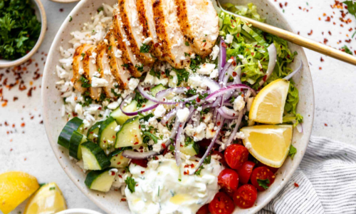

Greek Chicken Bowls
These simple greek chicken bowls pack a lot of flavor and textures into one easy to make meal.
Thes bowls are perfect for meal prep, loaded with veggies and homemade tzatziki.
Recipe Credit: Claire Cary
Ingredients
Chicken
- 4 small chicken breasts, about 1 1/4 pounds
- 1/4 cup olive oil
- 1 Tbsp lemon zest
- 2 Tbsp lemon juice
- 2 Tbsp honey
- 1 tsp garlic powder
- 1 1/2 tsp dried oregano
- 1 1/2 tsp dried basil
- 1 tsp salt
- 1/4 tsp black pepper
- 1/2 tsp red pepper flakes
Bowl
- 2 cups cooked rice or quinoa
- 2 cups halved grape or cherr tomatoes
- 2 cups diced or chopped cucumber
- 4 cups shredded romaine lettuce
- 1 cup sliced red onion
- 1/2 cup feta
Tzatziki
- 1 cup plain greek yogurt
- 1/2 cup grated cucumber
- 1 Tbsp lemon juice
- 1 Tbsp olive oil
- 1 tsp minced garlic
- 1/4 tsp salt, or to taste
- 1 Tbsp fresh chopped dill
Directions
- Whisk together all ingredients for the chicken marinade.
- Pound the chicken to about 1/2 inch thick, and add to a shallow bowl or ziplock bag with
the marinade.
- Let marinade for at least 30 minutes, or up to a few hours.
- Meanwhile, combine all ingredients for tzatziki and set aside.
- Prep the rice and veggies. Feel free to add pitted olives to each bowl as well.
- Once the chicken is done marinating, preheat your air fryer to 380 and air fry on one
side for 7 minutes, then flip over and cook for 3-4 more minutes or until the internal
temperature reaches 165 F.
- If you do not have an air fryer, heat a skillet with oil or butter over medium/low heat
and fry on one side for 7-8 minutes, then flip and fry on the other side until golden and
the internal temperature reaches 165 F.
- Let the chicken rest for 5 minutes away from the heat, then slice.
- Assemble your bowls with the rice, veggies, sliced chicken, feta, and tzatziki. You can
also drizzle on some olive oil and lemon juice as well. Enjoy!